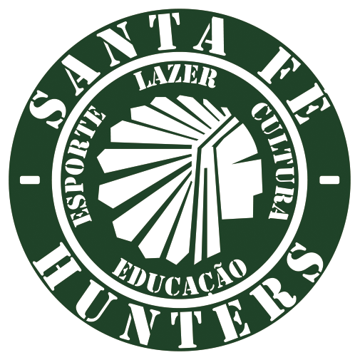
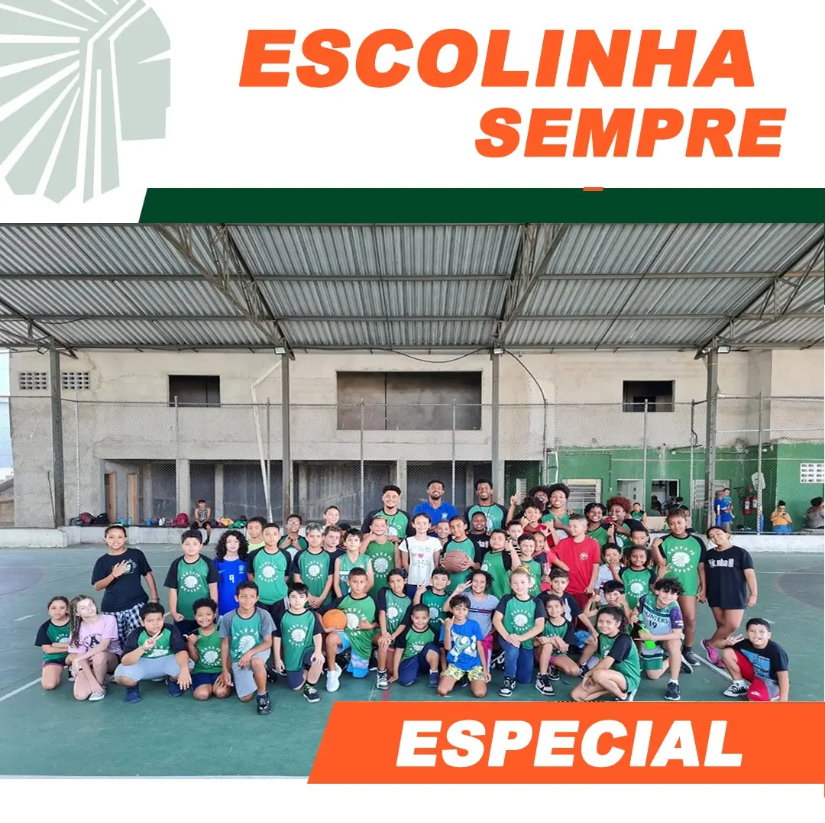

MAIS QUE BASQUETE
O ESPORTE SUPERANDO BARREIRAS.
O Santa Fé Hunters é um projeto social esportivo e educacional que há anos transforma vidas por meio do basquete.

O Santa Fé Hunters é um projeto social esportivo e educacional que há anos transforma vidas por meio do basquete.
O Santa Fé Hunters é uma organização social sem fins lucrativos e uma instituição esportiva fundada em 2011, com sede no Jardim Santa Fé, distrito do Grajaú, na Zona Sul de São Paulo. Oficializado juridicamente em 2018, o projeto nasceu do desejo de transformar a realidade local, utilizando o basquetebol como ferramenta de inclusão, educação e ascensão social para crianças, jovens e adultos.Ao longo de nossa trajetória, consolidamos a quadra de basquete não apenas como um espaço de treino físico, mas como um polo de acolhimento comunitário e formação cidadã.
Democratizar o acesso ao esporte de forma totalmente gratuita, promovendo o desenvolvimento humano integral, a saúde e a cidadania de comunidades em situação de vulnerabilidade social.Nossos ValoresDisciplina: Compromisso com o crescimento pessoal e coletivo dentro e fora das quadras.Respeito: Valorização da diversidade, do espírito esportivo e da convivência comunitária.União: Fortalecimento dos vínculos familiares e do senso de pertencimento local.Superação: Estímulo à resiliência e à busca por novas oportunidades através do esporte.
Disciplina: Compromisso com o crescimento pessoal e coletivo dentro e fora das quadras.
Valorização da diversidade, do espírito esportivo e da convivência comunitária.
União:Fortalecimento dos vínculos familiares e do senso de pertencimento local.
Superação:Estímulo à resiliência e à busca por novas oportunidades através do esporte.

tem como objetivo promover saúde, bem-estar e qualidade de vida para pessoas mais velhas. Por meio de atividades como caminhadas, exercícios de coordenação motora, alongamentos e ginástica, o projeto incentiva a prática de hábitos saudáveis, a socialização e a manutenção da autonomia dos participantes.

Oferecemos treinamento de basquete de alta qualidade, com foco no desenvolvimento técnico, tático e físico dos nossos atletas. Nossos treinadores são experientes e dedicados a ajudar cada jovem a alcançar seu potencial máximo dentro da quadra.

Linha de 3 é o curso pré-vestibular do Santa Fé Hunters, desenvolvido para preparar jovens da comunidade para o ENEM e vestibulares. Além do apoio acadêmico, o projeto incentiva a construção de projetos de vida, mostrando que a educação é uma ferramenta fundamental para ampliar oportunidades e transformar realidades.

Santa Fé Hunters oferece atendimento psicológico e ações de saúde mental para promover acolhimento, bem-estar emocional e qualidade de vida. O projeto busca fortalecer a saúde mental da comunidade por meio de apoio profissional e acompanhamento especializado.
Existem várias maneiras de apoiar o Santa Fé Hunters e contribuir para a continuidade do nosso trabalho transformador. Juntos, podemos continuar transformando vidas através do basquete e da educação.
Faça uma doação e ajude a transformar vidas através do basquete. Doe agora e faça parte dessa transformação!
Doe agoraAjude a divulgar o Santa Fé Hunters e amplie nosso impacto. Compartilhe nossas ações e campanhas nas redes sociais, fale sobre o projeto com amigos e familiares, e incentive outros a conhecerem nosso trabalho.
Compartilhar